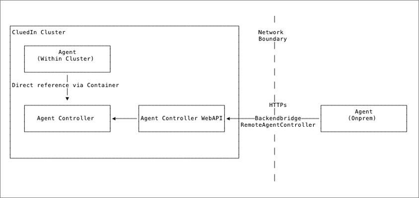
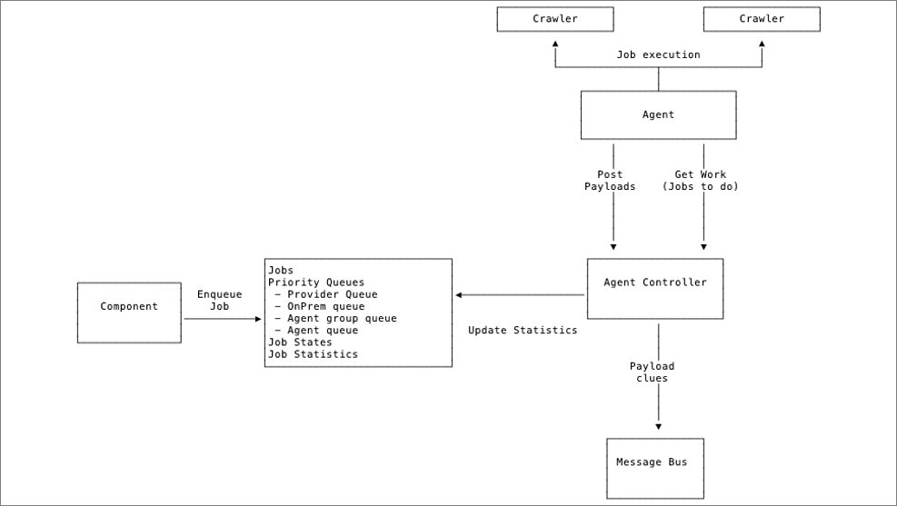

Using Agents
Agents are the orchestrators of running integrations. Agents allow you to run crawlers in remote environments, typically on different machines, even in different physical environments.
Agents are typically used for running hybrid environments of CluedIn where you may host CluedIn itself in the cloud, but need to run crawls on systems that live within an internal network of a business.
The Agents are responsible for running scheduled crawls and the robustness of making sure that the crawlers can survive times where they crash.
For running an Agent, you will need to register an Agent API key within the CluedIn datastore and then the Agents will need matching API keys in their configuration files on the remote machines. CluedIn will use Websockets to communicate between the Agents and the CluedIn Server.
When deploying your Agents, they will need to have the Agent API key match one of the API Keys that are registered in the Agents Database within CluedIn. The API key must be associated with the Organization ID of the account that is running the Agent.
The simplest way to setup an agent is to remove the ServerComponent folder from CluedIn, leaving only the Agent folder. In container.config, you have to make sure that the URLs are correct (e.g. AgentServerUrl should have the value of the CluedIn’s API endpoint).
For communication, Agents cannot receive incoming messages but rather uses a polling mechanism to talk with the CluedIn Server. In this way, other systems cannot instruct the Agents with a Job to run. The Agents will post data, logs and health statistics back to the CluedIn server so that CluedIn has knowledge of what is running within the Agents and any possible issues that could be happening.
Executes Agent Jobs from the CluedIn System against a 3rd party / provider api

Job results (clues) is sent back to CluedIn as payloads
Agents can be deployed:
- Within the CluedIn cluster (cloud)
- As a separate isolated component (onprem)
Cloud (within the CluedIn cluster)
- Directly connected to the backend
- Communicates with Agent Controller via direct reference from the container

Onprem (outside of our control)
- Deployed as VM’s within customers own environment
- Enables access to customers environments that is not accessible from the CluedIn Cluster Directly
- Communicates with Agent Controller over HTTP, TLS
- No access to CluedIn databases, Message Bus etc.
- Deployed with ComponentHost + individual components
- Ie. Smaller deployment package than the full CluedIn
- Processing, WebApi, DataStores is not available
- Agent API key is used for “Authentication”
Payload
- Binary Format
- Multiple Records
- Compressed
Types of Payloads
- Clue Payloads
- Clues produced from Crawlers
- Agent Job Log Payloads
- Logs produced from the job/crawler execution
- (Log shipping from the Agent back to the CluedIn cluster)
- (CompressedRecord
Payload)
Job Types
-
Normal Execute job, finishes when crawling is done
-
Continuous Does not finish Used to monitor as system and produce clues when changes happen Ie. File system monitoring, Kafka queue,….
Jobs have statistics of Start / stop dates Current number of tasks Number of completed tasks Number of failed tasks Number of clues produced Number of payloads submitted
Jobs can be restricted to only run on A specific agent A specific group of agents Any agent with type Cloud SharedProcessor (shared between multiple tenants) Onprem (A single tenant)
Orchestration Server Agents automatically download updates from the server (Zip file deployed centrally) Enables updates of Agent deployed in scenarios where we do not have access to the machines they are running on.
Deploying an agent
Agents can be deployed by downloading the Agent binaries and decompressing it onto an operating system of your choice. The folder ships with binaries for many different operating systems. We will use the example below of installing on a Windows machine.
Please ask your partner or direct CluedIn contact to give you access to these binaries.
Configuring the agent
The Agent can be configured by visiting the container.config that is inside your <agent-root>/Agent folder.
You should see a file that looks like this configuration file:
<?xml version="1.0" encoding="utf-8"?>
<configuration xmlns:urn="urn:schemas-microsoft-com:asm.v1" xmlns:xdt="http://schemas.microsoft.com/XML-Document-Transform">
<xdt:Import assembly="ComponentHost" namespace="ComponentHost.Transforms"/>
<startup xdt:Transform="InsertIfMissing">
<supportedRuntime version="v4.0" sku=".NETFramework,Version=v4.8"/>
</startup>
<appSettings xdt:Transform="InsertIfMissing">
<add key="ServerUrl" value="https://localhost:9000/" xdt:Locator="Condition(@key='ServerUrl')" xdt:Transform="Replace" />
<add key="AgentServerUrl" value="https://localhost:9000/" xdt:Locator="Condition(@key='AgentServerUrl')" xdt:Transform="Replace" />
<add key="ServerBlobUrl" value="https://localhost:9000/" xdt:Locator="Condition(@key='ServerBlobUrl')" xdt:Transform="Replace" />
<add key="WebhookUrl" value="https://localhost:9006/" xdt:Locator="Condition(@key='WebhookUrl')" xdt:Transform="Replace" />
<add key="WebhookServerUrl" value="https://localhost:9006/" xdt:Locator="Condition(@key='WebhookServerUrl')" xdt:Transform="Replace" />
<add key="ServerStatusUrl" value="http://localhost:9004/" xdt:Locator="Condition(@key='ServerStatusUrl')" xdt:Transform="Replace" />
<add key="ServerLoggingUrl" value="http://localhost:9005/" xdt:Locator="Condition(@key='ServerLoggingUrl')" xdt:Transform="Replace" />
<add key="ServerStatusDefaultRedirect" value="https://www.cluedin.net/" xdt:Locator="Condition(@key='ServerStatusDefaultRedirect')" xdt:Transform="Replace" />
<add key="AuthServerUrl" value="https://localhost:9001/" xdt:Locator="Condition(@key='AuthServerUrl')" xdt:Transform="Replace" />
<add key="Domain" value="localhost" xdt:Locator="Condition(@key='Domain')" xdt:Transform="Replace" />
<add key="EmailServer" value="" xdt:Locator="Condition(@key='EmailServer')" xdt:Transform="Replace" />
<add key="EmailPort" value="" xdt:Locator="Condition(@key='EmailPort')" xdt:Transform="Replace" />
<add key="EmailDisplayName" value="" xdt:Locator="Condition(@key='EmailDisplayName')" xdt:Transform="Replace" />
<add key="EmailSender" value="" xdt:Locator="Condition(@key='EmailSender')" xdt:Transform="Replace" />
<add key="EmailUserName" value="" xdt:Locator="Condition(@key='EmailUserName')" xdt:Transform="Replace" />
<add key="EmailPassword" value="" xdt:Locator="Condition(@key='EmailPassword')" xdt:Transform="Replace" />
<add key="Logging.Targets.Exceptions" value="false" xdt:Locator="Condition(@key='Logging.Targets.Exceptions')" xdt:Transform="Replace" />
<add key="Health.TemporaryDirectory.Enabled" value="true" xdt:Locator="Condition(@key='Health.TemporaryDirectory.Enabled')" xdt:Transform="Replace" />
<add key="Health.TemporaryDirectory.FreeSpacePctThreshold" value="0.0" xdt:Locator="Condition(@key='Health.TemporaryDirectory.FreeSpacePctThreshold')" xdt:Transform="Replace" />
<add key="Health.TemporaryDirectory.FreeSpaceBytesThreshold" value="209715200" xdt:Locator="Condition(@key='Health.TemporaryDirectory.FreeSpaceBytesThreshold')" xdt:Transform="Replace" />
<!-- Agent -->
<add key="Agent.Enabled" value="true" xdt:Locator="Condition(@key='Agent.Enabled')" xdt:Transform="Replace"/>
<add key="Agent.ErrorLogging.Project" value="6" xdt:Locator="Condition(@key='Agent.ErrorLogging.Project')" xdt:Transform="Replace" />
<add key="Agent.APIKey" value="!2qwaszx12346" xdt:Locator="Condition(@key='Agent.APIKey')" xdt:Transform="Replace" />
<add key="Agent.TaskScheduler" value="Default" xdt:Locator="Condition(@key='Agent.TaskScheduler')" xdt:Transform="Replace" />
<add key="Agent.Queue.MaximumJobsToQueuePerCpu" value="1.5" xdt:Locator="Condition(@key='Agent.Queue.MaximumJobsToQueuePerCpu')" xdt:Transform="Replace" />
</appSettings>
</configuration>
Connecting to Kubernetes master server
You will need to fill out the following configuration to connect to your Kubernetes cluster that is running the CluedIn Server, API and JobServer:
ServerUrl should contain a value that is the route to your CluedIn WebAPI you have installed. Usually it is something like https://app.<hostname>/api/
AgentServerUrl should contain a value that is the route to your CluedIn WebAPI you have installed. Usually it is something like https://app.<hostname>/api/
ServerBlobUrl should contain a value to your blob url. By default, it should be the same as your WebApi URL.
WebhookUrl should contain your Webhook API Url. By default, it is https://app.<hostname>/webhooks/
ServerStatusUrl should be https://app.<hostname>/api/status
ServerLoggingUrl should point to your WebApi. By default, it should be https://app.<hostname>/api/
AuthServerUrl should point to your Authentication API. By default, you can find the Authentication API at ttps://app.<hostname>/auth/
Agent Authentication
_BY DEFAULT, THE AGENT IS ALREADY SETUP TO RUN ON A DEFAULT ON-PREMISES CRAWLER. CHANGING A TOKEN IS RECOMMENDED BUT NOT NEEDED TO GET THE AGENT COMMUNICATING WITH THE SERVER_
The Agent that you have downloaded has to authenticate against a registered agent within the CluedIn Server. You can do this by port-forwarding to the CluedIn SQL Server pod within your Kubernetes Cluster (kubectl port-forward -l app=sqlserver 1433 --address 0.0.0.0) and adding an agent registration to DataStore.Db.OpenCommunication > dbo.Agent`, or just fill out the SQL query below and execute against the DataStore.Db.OpenCommunication database:
DECLARE @AgentId varchar(60);
SET @AgentId = '6CF17140-0FB0-47C5-AAAA-9A40A0ECF8BA';
DECLARE @AgentGroup varchar(60);
SET @AgentGroup = '612ed11a-b1b3-463f-b4a5-7c1bb7bd55a0';
DECLARE @AgentToken varchar(60);
SET @AgentToken = '--- INSERT YOUR API TOKEN HERE ---';
DECLARE @OrganizationId varchar(60);
SET @OrganizationId = (SELECT Id AS OrganizationId FROM dbo.OrganizationProfile WHERE OrganizationName = '--- INSERT YOUR CLIENT ID HERE ---');
DECLARE @DateTimeMin varchar(60);
SET @DateTimeMin = (select cast(-53690 as datetime));
UPDATE dbo.Agent SET AccountId = @OrganizationId, ApiKey
= @AgentToken, LastPing = @DateTimeMin WHERE Id = @AgentId;
After you have done this, copy the API Token you entered above, then set the ApiKey value in the container.config of the file you downloaded above.
Deploying Crawlers
In order to deploy a crawler into an agent you will need to have the crawler assembly files (Dll’s) either from a Nuget Package or by compiling and building a crawler locally on your developer machine.
Assemblies required:
- CluedIn.Crawling.CrawlerName
- CluedIn.Crawling.CrawlerName.Core
- CluedIn.Crawling.CrawlerName.Infrastructure
!!! Note, that Provider project is not required in the agent because the Provider is registereted in the cloud WebApi instance. Everything that is contained in the Provider project will be executed from the cluster itself
!! Ensure that all of the dependencies needed by your crawler are also deployed along with the crawler assemblies e.g. Nuget Dependencies.
Crawler assemblies needs to be moved into <agent-root>/Agent folder and will be picked up once the Agent is started.
On the cluster, you need to deploy all your crawlers packages above plus the Provider project’s NuGet package parts responsible for your crawler that will be executed by the agent.
Running the agent
Running the agent is as simple as starting boot.sh file.
For this, you may need to install something like Cygwin to be able to run .sh files on Windows.
You will see an output where your agent is trying to load the assemblies and connect to the cluster. Make sure there is nothing blocking the call getting to the API server networking-wise. You can now login to CluedIn and add your integration and the actual crawling of data will be then done through the Agent instead of the CluedIn server in the Kubernetes cluster.
You can also register this as a Windows Service so that it can be automatically restarted if the Windows VM is to restart. You can use this guide here on how to setup a Windows Service: Here
Enable Verbose Logging
By default the Agent will be running with low logging verbosity. To increase this you can set the $env:ASPNETCORE_ENVIRONMENT = “verbose”. You can also make sure this persists on the machine by setting it as a System Variable. You will need to close and restart your Agent and the session of the bash/command prompt you are using to invoke the boot.sh file to see the changes take effect.